Note
Hello, welcome to the SunFounder Raspberry Pi & Arduino & ESP32 Enthusiasts Community on Facebook! Dive deeper into Raspberry Pi, Arduino, and ESP32 with fellow enthusiasts.
Why Join?
Expert Support: Solve post-sale issues and technical challenges with help from our community and team.
Learn & Share: Exchange tips and tutorials to enhance your skills.
Exclusive Previews: Get early access to new product announcements and sneak peeks.
Special Discounts: Enjoy exclusive discounts on our newest products.
Festive Promotions and Giveaways: Take part in giveaways and holiday promotions.
👉 Ready to explore and create with us? Click [here] and join today!
2. Intrusion Alert System with Blynk
This project demonstrate a simple home intrusion detection system using a passive infrared (PIR) sensor (HC-SR501). When the system is set to ‘Away’ mode through the Blynk app, the PIR sensor monitors for motion. Any detected movement triggers a notification on the Blynk app, alerting the user of potential intrusion.
1. Build the Circuit
Note
The module draws a high current at start-up, so make sure the 9 V battery or an external power supply is plugged into the DC jack of the R4 Minima.

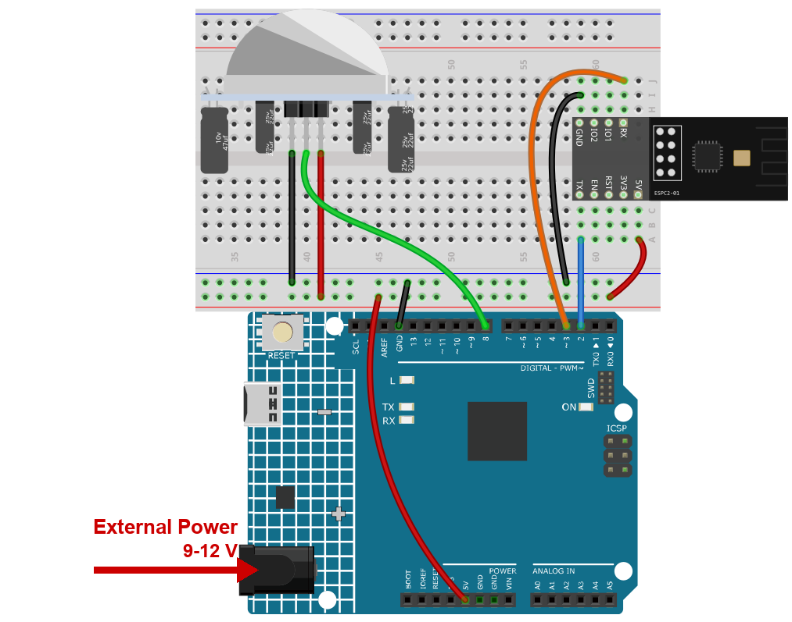
2. Configure Blynk
Note
The template and the device were created once in Get Started with Blynk. Every project adds its datastreams to that same template, so each project occupies its own range of virtual pins. This project uses V1 and V2. Nothing here changes the device token, so the sketch keeps working as it is.
There are two things to tell the cloud, and one of them is worth two datastreams.
away_mode- the switch you flip on your way out of the house.current_status- a line of text the board writes back, so you can see what it is doing.
Add the datastreams
Open Developer Zone -> My Templates, click Ultimate Sensor Kit.

Click Edit to open the template.

Click Datastreams, then Create New.

Create the first datastream:
DATASTREAM NAME:
away_modeDISPLAY NAME:
Away ModeVIRTUAL PIN:
V1DATA TYPE: Integer
MIN
0, MAX1
Note
An integer with a range of 0..1 is the usual way to model a switch:
1means the alarm is armed,0means it is off.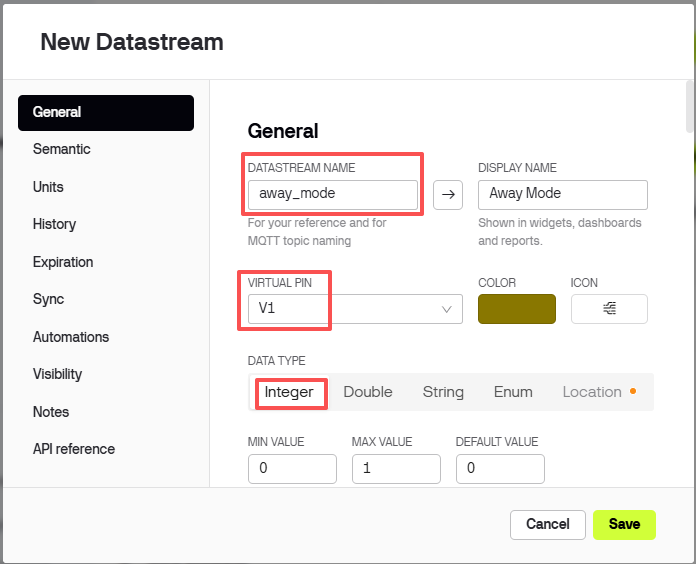
Click Create New again for the second datastream:
DATASTREAM NAME:
current_statusDISPLAY NAME:
Current StatusVIRTUAL PIN:
V2DATA TYPE: String
Note
A String holds text. The board sends lines such as
Detecting signs of intrusion...orSomebody in your house!, which a Label widget can show as is.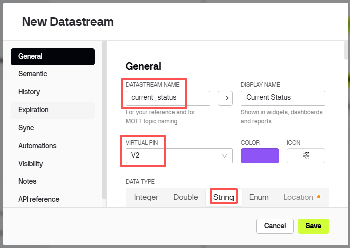
The list now shows both datastreams.
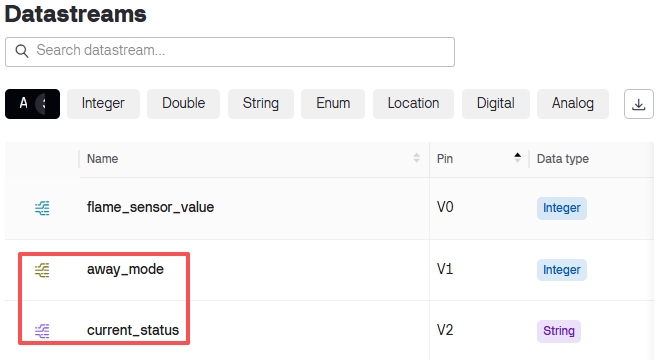


Add the event
An event is what turns a sensor reading into a notification on your phone. Without it the alarm only changes a label - nobody notices.
Open Events & notifications, then click Create Event.
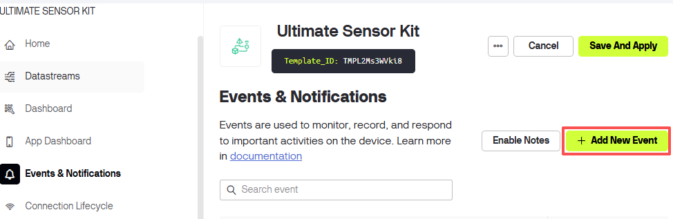
Set EVENT CODE to
intrusion_detected.Note
Type it exactly like this. The sketch calls
Blynk.logEvent("intrusion_detected"), and any other spelling silently does nothing.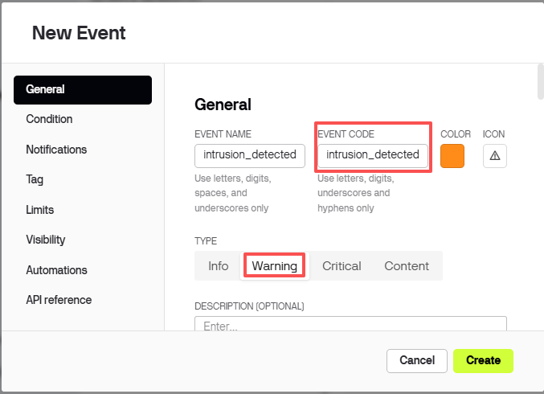
Turn the notification on and choose where it should go.
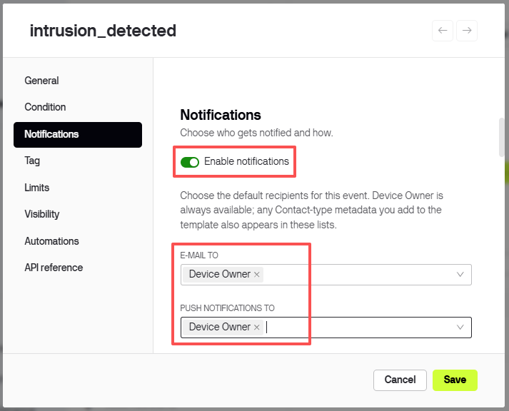


Add the web dashboard
The dashboard is the part you look at. Two widgets are enough here.
Click Dashboard, then Add Widget.

Drag a Label widget onto the dashboard.

Add a Switch widget.
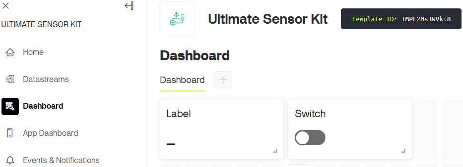
Click the three dots in the corner of the Label and choose Settings.
Set Datastream to
Current Status (V2).
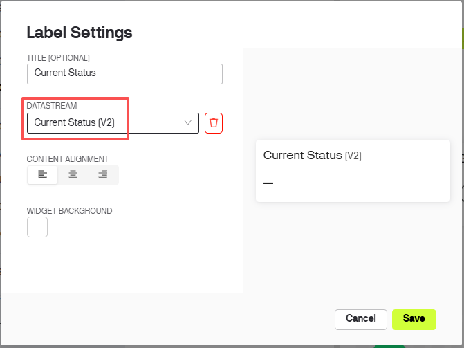
Do the same for the Switch.
Set Datastream to
Away Mode (V1), ON LABELaway homeand OFF LABELat home.
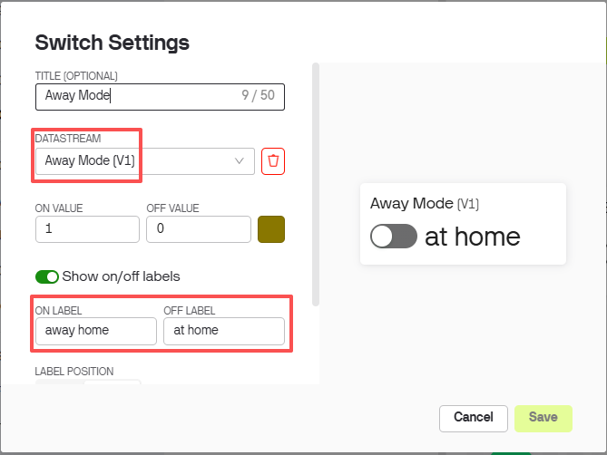
Click Save.


3. Run the Code
Open the
02-Intrusion_alert_system.inofile under the path ofultimate-sensor-kit\code\iot_project_espc201\wifi\02-Intrusion_alert_system, or copy this code into Arduino IDE.The three Blynk lines are the ones you copied in the Get Started chapter. Leave them as they are - the device is already created, so only the Wi-Fi settings differ between projects.
#define BLYNK_TEMPLATE_ID "TMPLxxxxxx" #define BLYNK_TEMPLATE_NAME "Ultimate Sensor Kit" #define BLYNK_AUTH_TOKEN "YourAuthToken"
Type the name and the password of your own Wi-Fi network.
char ssid[] = "your_ssid"; char pass[] = "your_password";
Select Arduino UNO R4 Minima and the right port, then click Upload.
Open the Serial Monitor at 115200. When the board reaches the cloud the log ends with
Ready. Every time you flip the switch in the app, a line appears here - that is how you know the two are talking.
Now flip the switch to away home and wave your hand in front of the PIR sensor. The label on the dashboard changes to
Somebody in your house! Please check!and your phone shows a notification.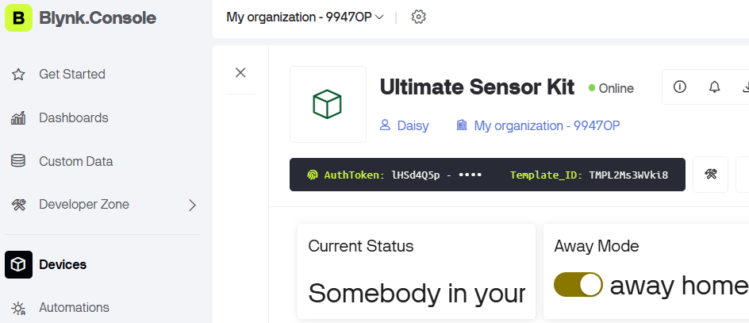
To use Blynk on a phone, see How to use Blynk on mobile device?.

4. Code explanation
Blynk account and libraries
The first three lines say which Blynk device this board belongs to. They come from the device page and are identical in every project of the kit.
#define BLYNK_TEMPLATE_ID "TMPL2Ms3WVki8" #define BLYNK_TEMPLATE_NAME "Ultimate Sensor Kit" #define BLYNK_AUTH_TOKEN "lHSd4Q5pXP7YKUovVfPZYZqC0UHVORY6" #define BLYNK_PRINT Serial // show Blynk's own log on the Serial Monitor #include <ESP8266_Lib.h> // sends the AT commands #include <BlynkSimpleShieldEsp8266.h> // Blynk on top of them
The serial port that talks to the module
The ESPC2-01 is not running your sketch - it works as a modem that answers AT commands. On the R4 it sits on D0/D1, which is
Serial1, a hardware port, so 115200 works without bit errors.#define EspSerial Serial1 #define ESP8266_BAUD 115200 ESP8266 wifi(&EspSerial);
PIR pin and the two state variables
const int sensorPin = 8; // PIR output: HIGH = movement, LOW = quiet int state = 0; // last reading of the pin int awayHomeMode = 0; // 1 = the switch in the app is on, so the alarm is armed BlynkTimer timer;
stateis what makes the next section possible: comparing the new reading with the old one tells you the moment somebody walks past, instead of “there is a person” a hundred times.awayHomeModeis the answer to “am I at home or not” - the alarm only reacts when it is1.espModuleInit() - wake the module up first
The module needs about a second to boot, and it prints its start-up log on the very wire the sketch is about to use. Send commands too early and the replies get tangled with that log. This function waits for the word
ready, then sendsATE0.void espModuleInit() { unsigned long t0 = millis(); String buf; while (millis() - t0 < 5000) { while (EspSerial.available()) { buf += (char)EspSerial.read(); if (buf.indexOf("ready") >= 0) t0 = millis() - 5000; // leave the loop } } while (EspSerial.available()) EspSerial.read(); EspSerial.print("ATE0\r\n"); // echo off delay(300); while (EspSerial.available()) EspSerial.read(); }
ATE0turns the echo off. With echo on, every reply starts with the command you just sent, and Blynk reads that line as garbage.setup()
void setup() { pinMode(sensorPin, INPUT); Serial.begin(115200); EspSerial.begin(ESP8266_BAUD); delay(10); espModuleInit(); Blynk.config(wifi, BLYNK_AUTH_TOKEN); Blynk.connectWiFi(ssid, pass); timer.setInterval(1000L, myTimerEvent); }
timer.setInterval(1000L, myTimerEvent)calls the function once per second. Change that number to check the sensor more or less often.loop()
void loop() { Blynk.run(); timer.run(); }
Blynk.run()keeps the connection alive,timer.run()fires the scheduled function. Nothing here may block, or the cloud drops the device.BLYNK_CONNECTED() and BLYNK_WRITE(V1)
BLYNK_CONNECTED() { Blynk.syncVirtual(V1); } BLYNK_WRITE(V1) { awayHomeMode = param.asInt(); ... }
BLYNK_CONNECTED()runs every time the board reaches the server - including after a power cut.Blynk.syncVirtual(V1)asks for the current switch position, so a board that restarted at midnight still knows that you left the house.BLYNK_WRITE(V1)runs whenever the switch in the app is moved.param.asInt()is the new value,1or0, and the reply goes straight back to the label on datastream V2.sendData() - react to the edge, not the level
void sendData() { int now = digitalRead(sensorPin); bool rising = (now == HIGH && state == LOW); state = now; if (awayHomeMode == 1 && rising && millis() - lastAlert > 5000) { lastAlert = millis(); Blynk.virtualWrite(V2, "Somebody in your house! Please check!"); Blynk.logEvent("intrusion_detected"); } }
risingis true only on the step fromLOWtoHIGH- the moment the sensor reacts. Without it the sketch would send a message every second for as long as someone stands there, which burns through the Blynk quota in minutes.millis() - lastAlert > 5000keeps two alerts at least five seconds apart.Blynk.virtualWrite(V2, ...)writes the text the label widget displays.Blynk.logEvent("intrusion_detected")sends the event that pops the notification up. The name must match the EVENT CODE you created, character for character.